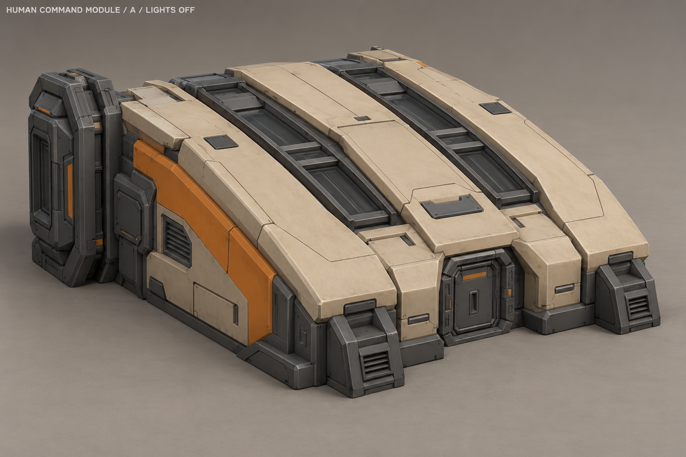
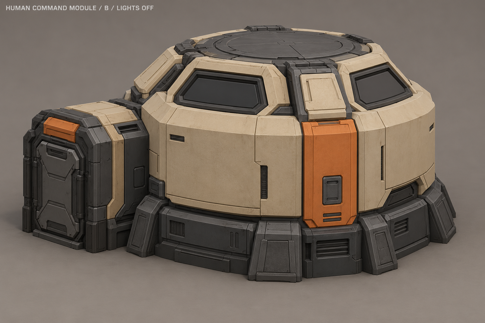
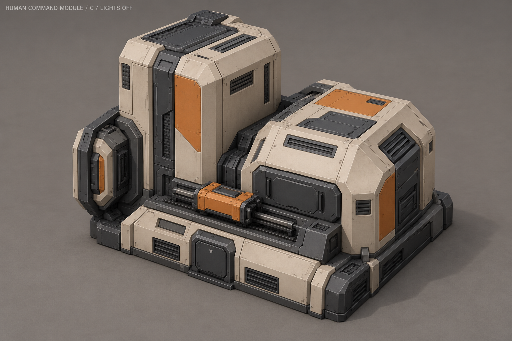
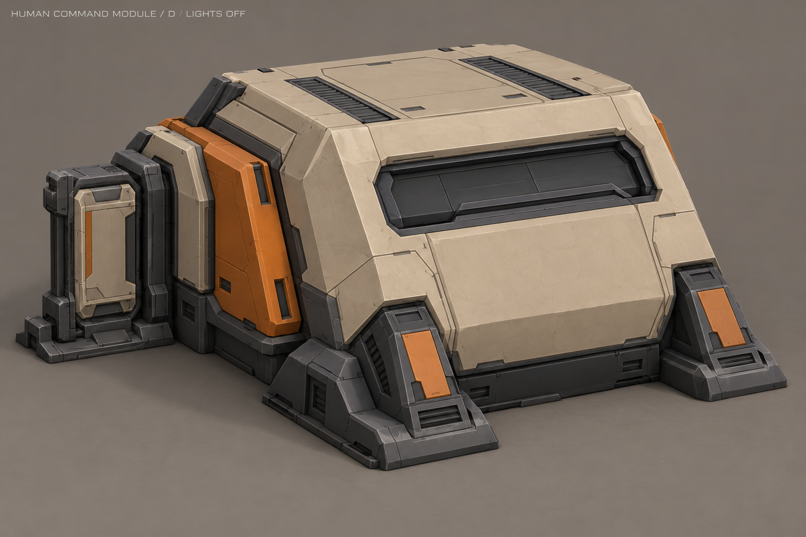
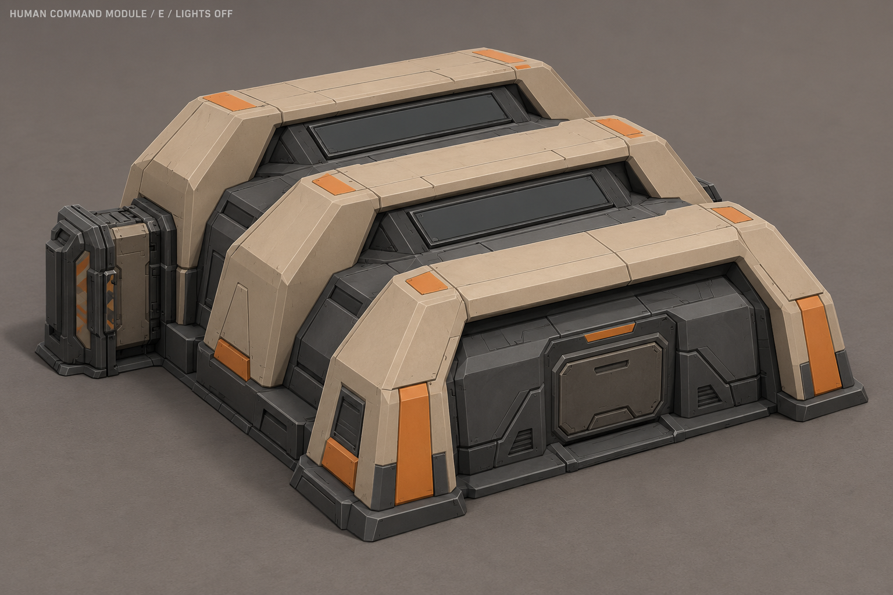
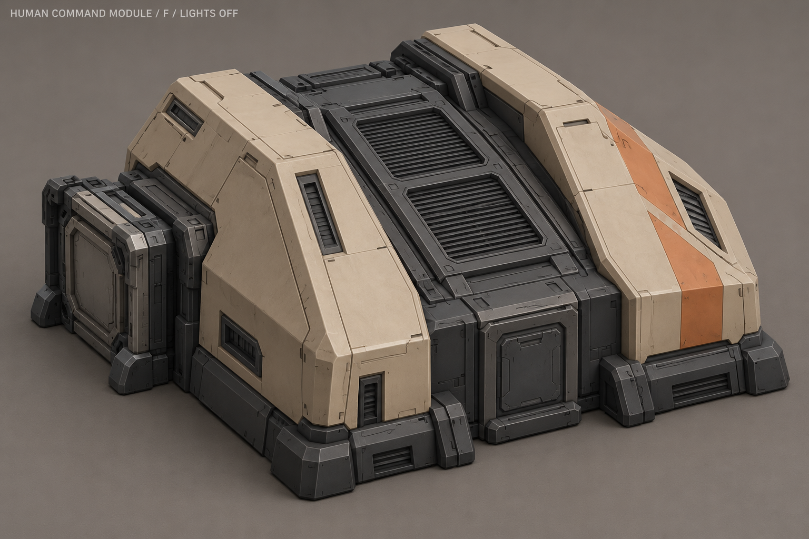
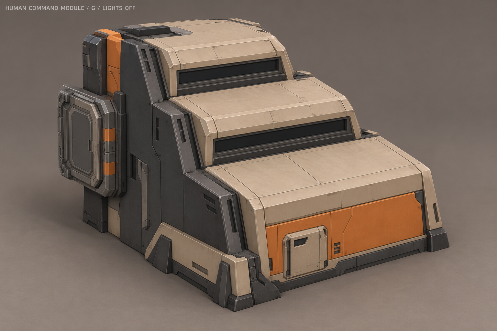
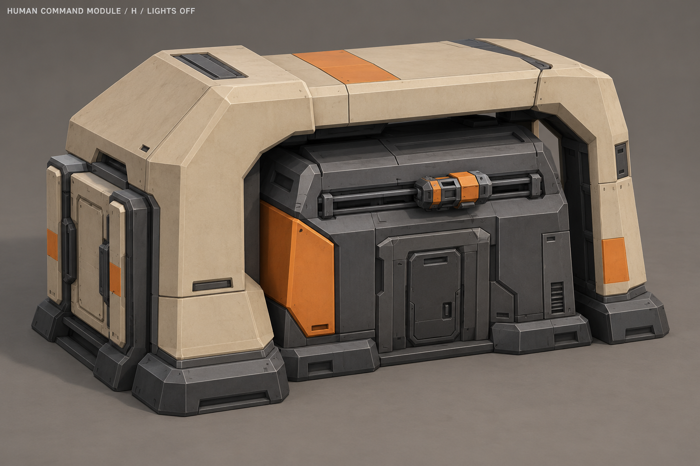

A «Стыковочный клин»

Низкий клин со стыковочной рамой и двумя диагностическими полосами.
Предложение индикации готовности
Световая волна в двух полосах на скате.
Художественная идея. Модуль открывает технологии, собственной очереди производства или исследований у него нет. Схема не задаёт новую механику.
B «Ядро связи»

Восьмигранный корпус с коротким боковым стыком и поясом панелей.
Предложение индикации готовности
Три группы панелей загораются со сдвигом фаз.
Художественная идея. Модуль открывает технологии, собственной очереди производства или исследований у него нет. Схема не задаёт новую механику.
C «Двойная кассета»

Две кассеты разной высоты с общей перемычкой.
Предложение индикации готовности
Небольшая техническая каретка ходит по горизонтальной направляющей.
Художественная идея. Модуль открывает технологии, собственной очереди производства или исследований у него нет. Схема не задаёт новую механику.
D «Наклонный блок»

Наклонённый трапециевидный корпус на двух широких опорах.
Предложение индикации готовности
Бегущий свет в утопленной полосе наклонного фасада.
Художественная идея. Модуль открывает технологии, собственной очереди производства или исследований у него нет. Схема не задаёт новую механику.
E «Три ребра»

Низкий аппаратный блок под тремя рёбрами разной высоты.
Предложение индикации готовности
Последовательный световой цикл между неподвижными рёбрами.
Художественная идея. Модуль открывает технологии, собственной очереди производства или исследований у него нет. Схема не задаёт новую механику.
F «Седловина»

Два плеча корпуса и утопленный центральный технический канал.
Предложение индикации готовности
Центральная вентиляционная створка слегка приподнимается и возвращается.
Художественная идея. Модуль открывает технологии, собственной очереди производства или исследований у него нет. Схема не задаёт новую механику.
G «Ступенчатый узел»

Три ступени поднимаются по диагонали к стыковочной стороне.
Предложение индикации готовности
Световой импульс проходит по ступеням корпуса.
Художественная идея. Модуль открывает технологии, собственной очереди производства или исследований у него нет. Схема не задаёт новую механику.
H «Защитная скоба»

Массивная защитная скоба вокруг закрытого аппаратного ядра.
Предложение индикации готовности
Диагностический модуль движется под неподвижной перемычкой.
Художественная идея. Модуль открывает технологии, собственной очереди производства или исследований у него нет. Схема не задаёт новую механику.